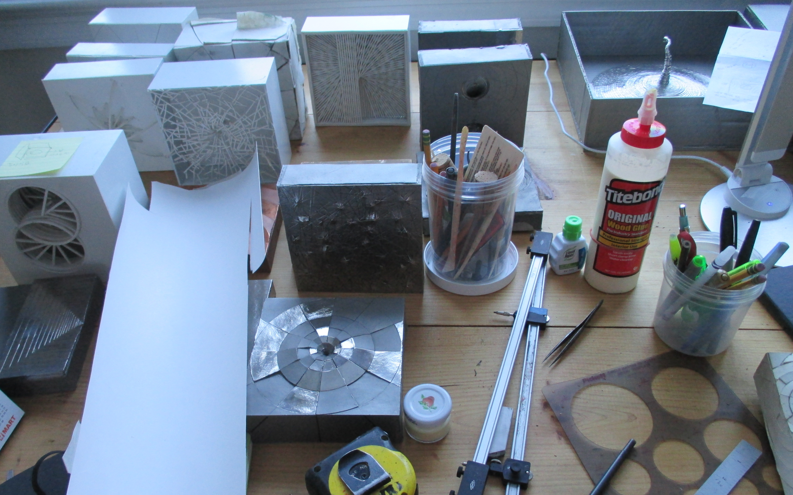
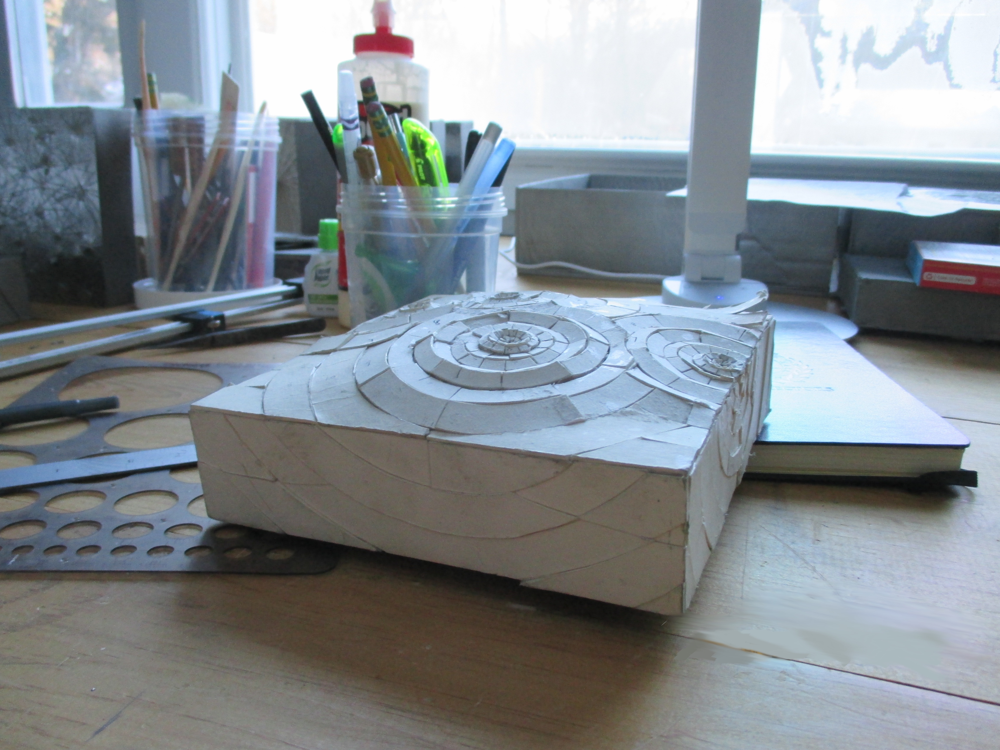

The Process
The Process
The following is an overview of my creative process.
I wanted to give people a look into how the finalized product
is created, from the inception of the idea, to the actual work, all the way to coming back and retouching the details.
Click through the tabs to navigate.
My ideas often come in fragments, like most ideas. They are underdeveloped and lack substance, and some don't even make it to fruition. But I always, always write it down in some form or another. Then later, they are there for me to review or revisit, and later, possibly, to create.
Sketching
Sometimes my ideas are simply notes, othertimes they are hastily drawn sketches. Then from these sketches or notes, I formulate more substantial drawings. These reformed sketches become the blueprints to my pieces.

It's hard to work nonstop on one piece, because you begin to lose that objective view of your work, and you become
less and less critical of yourself. Because of this, when I "finish" a piece, it isn't truly finished, it is simply
finished for now. Thus, I often go back to revisit older pieces and touch up minor details like bumps or edges.
Sometimes, more drastic changes are made, such as the metal used to make certain pieces, or the placement of certain
elements. My creative process is rarely a one way street. It always involves meandering and going back and forth until I'm satisfied
with what I have.
Contact
Please feel free to contact with questions. The easiest way to contact me is through email: unjujlee@gmail.com. Or contact by calling me on my cell: (845) 287 1564.
Take a look at my portfolio here.